Comandos básicos en una terminal de Linux
Bueno para abrir la terminal podemos presionar la combinación de teclas Cntr+Alt+T. También podemos buscarlo desde el menú pulsando la tecla Windows y escribiendo "terminal" En la terminal podemos hacer lo mismo e incluso más de lo que podemos hacer desde la interfaz gráfica del sistema. Acontinuación voy a seguir una lista con todos los comandos y explicando para que sirve cada uno. Tenemos que tener cuidado con las minúsculas y mayúsculas porque linux es sensible a esto, es decir que si ponemos el mismo comando pero lo escribimos todo en mayúsculas pues no será capaz de interpretar ese comando. ¡Todos los camandos que escriba a continuación se tienen que escribir en minúsculas!
- Mkdir: Con mkdir podemos crear una carpeta, solo tendríamos que poner "mkdir" seguidamente del nombre que queramos ponerle a la carpeta. 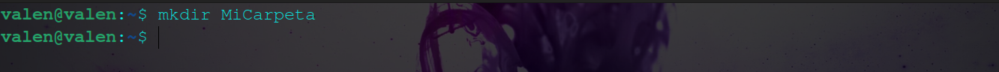
-
CD: Con "cd" podemos movernos entre distintos directorios, los directorios son las carpetas que hay dentro
de nuestro sistema operativo, por defecto el sistema tiene una serie de carpetas importantes donde
se encuentran todos los archivos importantes para su correct funcionamiento, entre esas carpetas se encuentran
una con el nombre de nuestro usuario y es en esa donde se guardan todos nuestros datos.
Cuando nos movemos entre directorios (carpetas) lo que hacemos es entrar o salir de una carpeta. Esas carpetas
se encuentran dentro de otras carpetas, por lo que para movernos a una carpeta en concreto debemos saber cuál es la "Ruta".
Y la ruta sería todas esas carpetas a las que tendremos que acceder para llegar hasta la carpeta que nos interesa.
La Ruta puede ser Absoluta o Relativa, la diferencia es que en la Absoluta tendremos que escribir todas las carpetas que hay desde el inicio
hasta el final de nuestro destino, mientras que una ruta relativa es cuando le indicamos al sistema que nos movemos desde el punto donde nos encontramos
por ejemplo:
Ruta Absoluta: si creamos una carpeta en el escritorio y queremos entrar debemos poner la siguiente ruta:
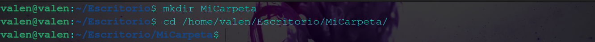Según como tengamos configurado el idioma del sistema tendremos que poner Desktop o Escritorio. Cuando pongo carpetaNueva hago referencia a esa carpeta que hemos creado y cuando pongo usuario hago referencia al nombre de mi cuenta, si tu por ejemplo te llamas Pepe tendrías que poner:
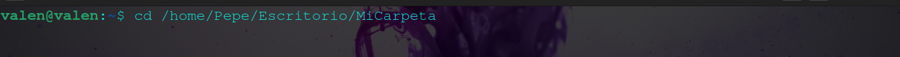Ruta relativa: la ruta relativa en este caso nos sería más cómodo porque solo tendríamos que poner:
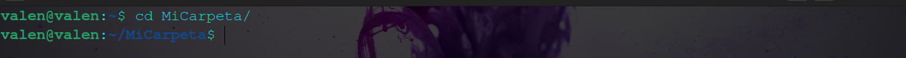En este caso el sistema coge directamente la ruta donde nos encontramos y se mueve a la carpetaNueva
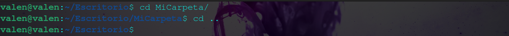
Si queremos salir de una carpeta ponemos lo siguiente:Si queremos salir y entrar a otra carpte escribimos lo siguiente, suponiendo que estoy en el Escritorio y quiero acceder a la carpeta Documentos
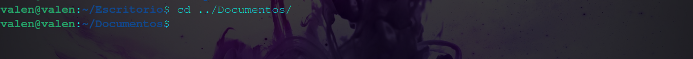 - Pwd: nos muestra cuál es la ruta actual donde nos encontramos. 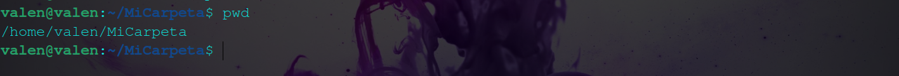
- touch: sirve para crear archivos de texto, se escribe de la misma manera que cuando creabamos carpetas, solo tendríamos que escribir: 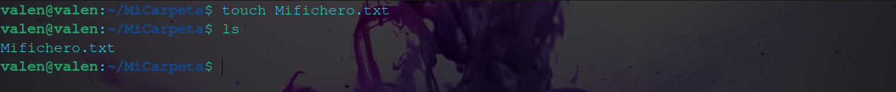
- ls: este comando nos muestra todo el contenido que pueda haber dentro de una carpeta 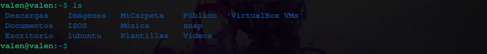
- cat: nos muestra el contenido que hay dentro de un archivo, por ejemplo si le hacemos un cat a un fichero .txt nos muestra todo lo que hallamos escrito dentro de ese archivo .txt. 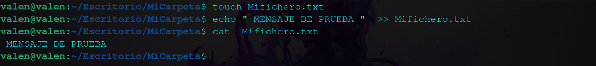
- sudo apt update && sudo apt upgrade: para actualizar el sistema utilizamos estos dos comandos, el udate lo que hace es comparar la versión de todos los repositorios con los repositorios que hay en la nube para ver cuales hay que actualizar y el upgrade es el que ya se encarga de instalar los paquetes y actualizarlos.El símbolo "&&" lo que hace es que podamos escribir dos comandos seguidos en la terminal. 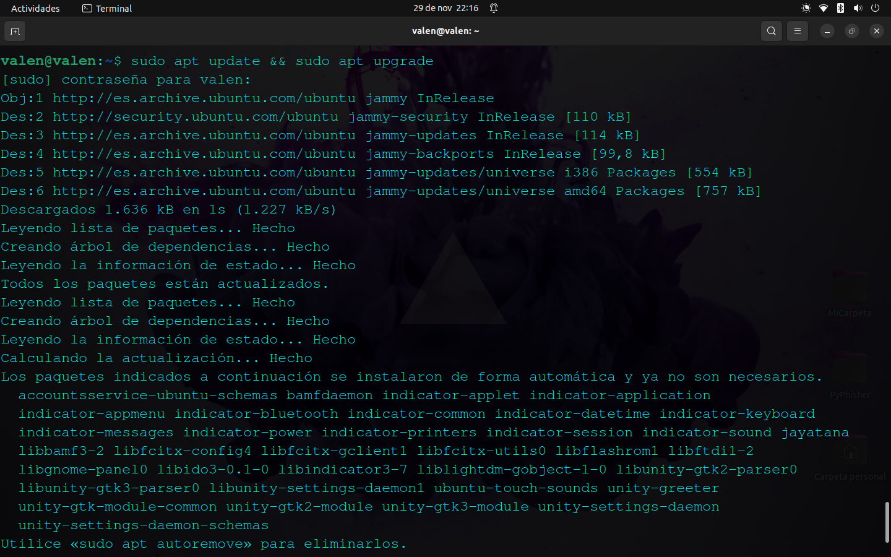
- sudo apt install: este comando va seguido del nombre de la aplicación o de la herramienta para instalarlo en nuestro sistema. 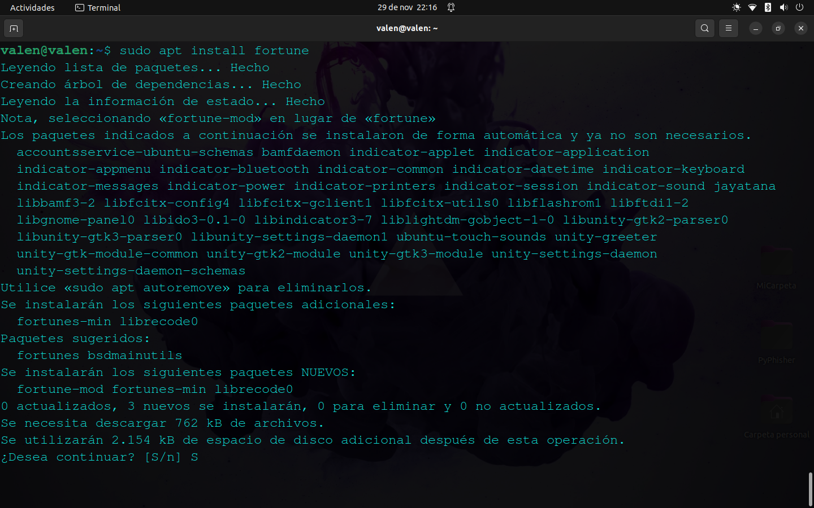
- sudo apt remove: el "remove" es para desinstalar una herramienta o aplicación de nuestro sistema. 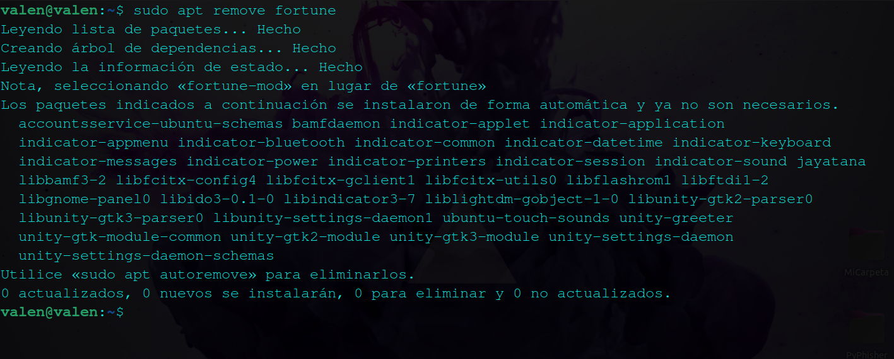